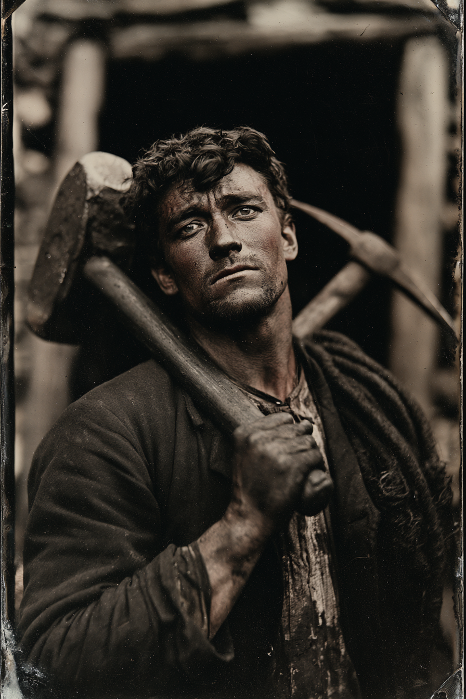

Archetyp: WARRIOR (Krieger)
Einsteigerfigur: keine Schusswaffe, keine Reichweite, keine Entscheidung — er geht hin und schlägt zu.
Sie brauchten neun Tage, um zu ihm durchzukommen. Er hat die ganze Zeit gesungen, damit sie ihn hören. In der letzten Nacht hat etwas mitgesungen.
| Agility | d6 | 1 |
| Smarts | d4 | 0 |
| Spirit | d6 | 1 |
| Strength | d8 | 2 |
| Vigor | d6 | 1 |
| Skill | Attr. | Die | Pts. |
|---|---|---|---|
| Fighting | Agi | d8 | 4 |
| Intimidation | Spi | d6 | 2 |
| Notice | Sma | d6 | 2 |
| Athletics | Agi | d6 | 1 |
| Survival | Sma | d4 | 1 |
| Repair | Sma | d4 | 1 |
| Riding | Agi | d4 | 1 |
| Weapon | Range | Damage | AP | RoF | Wt. | Cost |
|---|---|---|---|---|---|---|
| Der Fäustel | – | Stä+W6 | – | – | 1,5 | $3 |
| als Kriegskeule gekauft (Grundbuch S. 29), Mindeststärke W6 erfüllt · Eschenstiel, dreimal ersetzt, Kopf nie | ||||||
Sweep: ein Angriff mit –2 gegen alle in Reichweite, Freund wie Feind
Brawny: Größe und Robustheit +1 · Guts: Furcht neu · Nachtängste: –1 Willenskraft
Hintergrund. Merthyr Tydfil, dann die Anthrazitgruben bei Scranton, dann Colorado, weil ein Anwerber behauptete, dort sei die Luft besser. Owen ist Häuer in der dritten Generation und kann weder lesen noch schreiben; die Zahlen kann er, weil man beim Gedinge betrogen wird, wenn man sie nicht kann. Im November ’83 brach in der Grube Little Bess bei Crested Butte die vierte Sohle zusammen und schnitt ihn mit zwei anderen ab. Die zwei anderen starben in den ersten beiden Tagen. Owen schlug sich sechzig Meter durch Bruchgestein und sang dabei ununterbrochen Aberystwyth, weil Singen Luft spart, wenn man langsam singt, und weil die Rettungsmannschaft ein Geräusch braucht, auf das sie zugraben kann. Am neunten Tag holten sie ihn heraus. Er hat den Fäustel behalten und ist nie wieder eingefahren.
Build. Geschicklichkeit W6, Verstand W4, Geist W6, Stärke W8, Konstitution W6 · Parade 6, Robustheit 6 (5 + 1 Kräftig) Kämpfen W8, Einschüchtern W6, Bemerken W6, Athletik W6, Überleben W4, Reparieren W4, Reiten W4 Talente: Brawny (Kräftig), Sweep (Rundumschlag), Guts (Mumm) Handicaps: Night Terrors (Nachtängste) — Major · Illiterate (Analphabet) — Minor · Hard of Hearing (Schwerhörig) — Minor: dreißig Jahre Sprengschüsse, –4 auf Wahrnehmung, wenn sie am Gehör hängt Die beiden Hälften gehören zusammen: Nachtängste kosten ihn –1 auf jede Willenskraftprobe, Mumm gibt ihm dafür eine freie Wiederholung, wenn es zählt. Wer die Figur spielt, muss sich nur einen Satz merken: „Nachts träumt er schlecht. Tagsüber bleibt er stehen.“
Aufhänger. In der neunten Nacht, kurz bevor sie durchkamen, sang etwas hinter dem Bruchgestein die zweite Stimme. Auf Walisisch, sauber, im Takt, und es kannte den vierten Vers, den Owen selbst nicht kann. Er hat nie jemandem davon erzählt, weil man ihn dann nicht mehr angestellt hätte. Er singt seither nicht mehr — außer wenn es sehr dunkel ist und er sich vergisst, und dann hört er jedes Mal hin, ob es wieder einsetzt.
Warum es Spaß macht. Der einfachste Bogen im ganzen Ordner: kein Schießen, keine Reichweite, kein Nachladen, keine Machtliste. Man geht hin und würfelt W8. Rundumschlag ist der eine Trick, und er ist genau dann großartig, wenn drei Dinge gleichzeitig an dir hängen — was im Unheimlichen Westen ungefähr jede zweite Begegnung ist. Dazu Robustheit 6 auf Novize, was heißt, dass du der Figur beim Lernen ein paar Fehler verzeihen darfst.
Regelgrundlage: Regelnotizen · Archetyp-Notizen